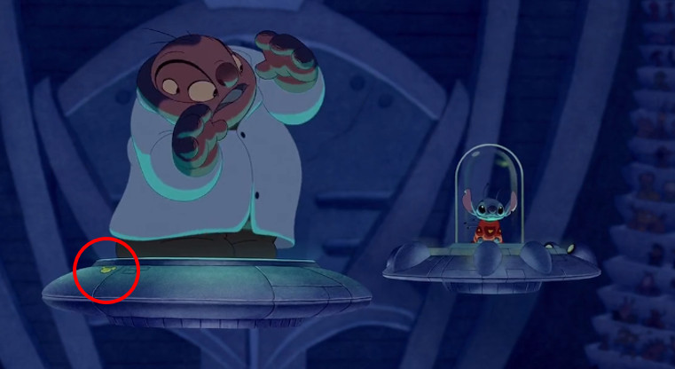
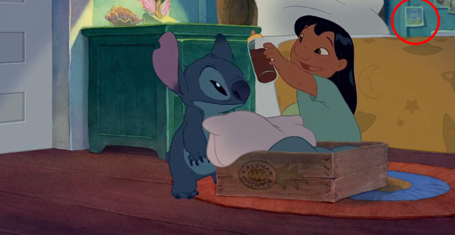
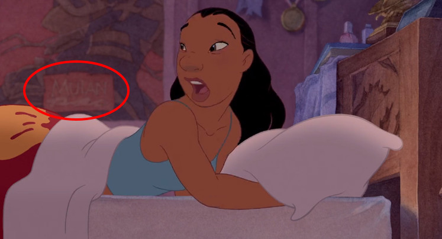
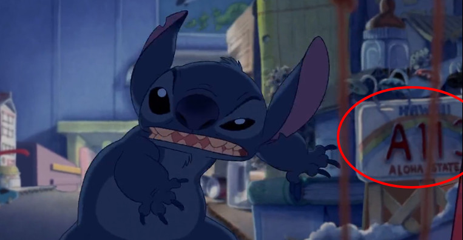
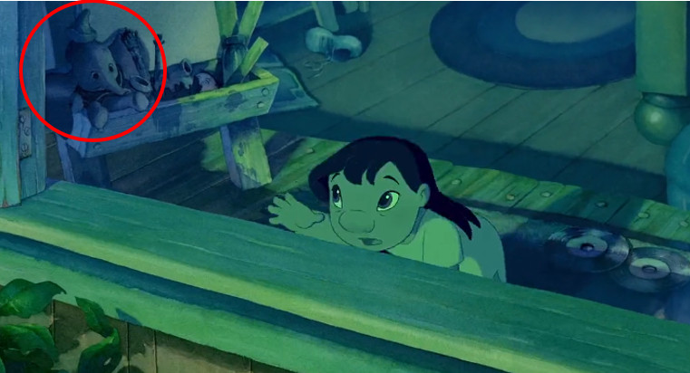
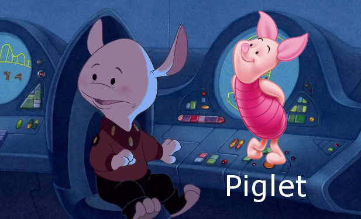
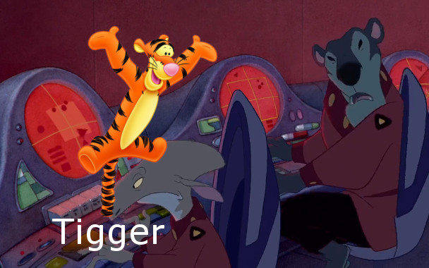

Hidden Mickey Mouse Heads
Hidden Vintage Mickey Mouse Head
Mulan Posters in Lilo and Stitch
A113 in Lilo and Stitch - A113 is from John Lasseter's (who worked on Toy Story, A Bug's Life, and The Brave Little Toaster) college dorm room.
Dumbo in Lilo and Stitch
Some people think that the characters in the movie, mainly the alien's look like Winnie the Pooh Characters. For Example:
Piglet
Tigger
